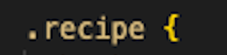

~ Tech Blog ~
Problem Solving

This time I was blocked on a simple problem:
What wasn't the problem, am I right? Where do I begin…well there was this particular instance that I remember during a coding exercise called fizzbuzz, where you get the computer to say a number, fizz, buzz, or fizzbuzz, depending on what the number the computer lands on. I had written the code following all the prompts to get to the last step and was feeling ok about it. But when I hit RUN, it didn’t seem to want to let me pass. I went through the code line by line, console.logging as I went, re-reading my Pseudocode and it appeared everything was matching up until the last function. I just couldn’t see what had gone wrong. I asked a friend to have a look and even matched my code up with their code. It looked the same. Assuming at this point that the code was right, the only conclusion I could come to was that it must be a human error, a spelling or character error. In the end, it was the spelling of the word length, I had the t and the h the wrong way around. This process, albeit annoying due to the error being my spelling, helped me to learn that sometimes the smallest things make big disruptions, and to spellcheck everything, all the time.
Elegantly solved a problem
Elegant problem solving at this stage is a pretty strong phrase to use lol. There was a task in which I had to find the word - “Scooby” which was hiding in a box. Running the code to receive the error message, as well as console logging the function and running the function name itself gave me several clues to start from. Building a pseudocode and googling keywords was very helpful and also useful to figure out which built in methods might be used. Such as .find seems self-explanatory once you start to figure it all out. Understanding the problem and the solving process is getting marginally easier with practise and I am getting better at breaking it all down into small pieces, and then converting it into language that is easier for me to understand.
Reflecting problem solving techniques:
I enjoy using the Pseudocode technique because it feels like it makes sense, converting the language into very simple straightforward steps, that you slowly work through.
Sometimes I get a bit stuck on where to start and trying random things to figure out where to start is often unhelpful and frustrating, perhaps this is due to my unfamiliarity at this stage with javascript, but when paired with googling solutions I definitely get there eventually.
I don’t like the rubber ducky method, I find the tactility of paper and pen helpful in this instance or talking it through with a person. Perhaps I’m not ready for a rubber ducky in my bathtub.
Reading error messages and Console.logging are quite helpful, especially in the beginning - as a place to start finding extra bread crumbs. It also displays what’s happening so you can see the track you are on.
Googling is a great tool that I have used a lot for problem solving. Framing your questions to hone in on the right answer has being getting easier and easier with practice. But as the internet is endless, there are some pretty unhelpful examples/solutions/rabbit holes out there. I have come across code where the author has taken something simple and made it as complicated as possible - I feel - in order for them to seem super smart but its actually just annoying.
I find asking my peers or coaches for guidance really helpful but I do try to save this for when none of the other techniques are working out. Learning from another person, and one that is going through the same challenges as me is great, they don’t just give you the answer but rather help and guide you to find it yourself. But asking for help isn’t always easy.
JavaScript & the DOM
A relationship based on trust
Let’s say you in are in a doorway that looks down, a long way down. It’s the door of a small plane and you are about to jump out. HTML is the backpack that holds the shoot. CSS determines the colour and shape of your parachute, is it red, is it blue, is it shaped like a frog. Java script is the mechanism that when pulled releases the parachute to open above you, slowing your decent, making the the ride a ride and not imminent death. Free Falling by Tom Petty is the song that is playing.
)
Control flow & loop
A control flow is a series of events, which happen one after the other in a fixed sequence. Regardless of how many things happen to an object, the last thing done to it is the one that sticks. Let’s take the example of painting a wall, you can paint a wall green, then black and then white, the green and black layers still exist but only the white layer is visible.
Loops repeat a certain thing a number of times until they recognise their job is done. Like building a Medovik (Ukrainian) Honey layer cake. The cake has gone through it’s control loop, it’s been mixed and baked. Now it needs to be assembled (Looped). You start by placing a layer down, followed by a layer of filling, then another layer and so on - until all the layers have been completed, only once all the filling and layers have been used is the cake finished. In which it can then be complete - cut and eaten.

Not 50 shades of grey
The DOM. Short for Document Object Model. It is an interface that represents all the data that makes up a webpage or web based document it also allows you to manipulate that document. It represents all the data in the form of family tree. You can navigate the tree and access/change specific elements by moving though there parent element. Each elemnt has one parent and is nested within. This is an exapmly of code that you would use to access something in your HTML file:
getElementById(cakeRecipe) in your HTML file it would point towards the line of code
< p id =" cakeRecipe ">
Array of light and Objects
Arrays and objects are variables that contain date.
An array is a horizontal list of things, that are represented and accessed by an index, starting at 0. Always look for [square brackets]. You access data from an array by pulling from one of its index’d numbers.
Example of Array:
Let cakes = [1] is wanting to access index 1 which = chocolate cake.
See the Pen Untitled by ? (@-KM) on CodePen.
A object is a vertical list, and can contain specific information to a variable.
Here you can see that we are getting the value of flour in g from this recipe. This is console logging out at 750g.
Example of Object:
"Computer says no" functions
Function’s are one of the cornerstones of js. It is a piece of code that performed a task. But only when asked too. In side of the function’s {} is code that will be executed when asked too.
For example:
This is a calculator taht only calculats 1+1. As you can see the function is returing the equation to the site. the document. is telling the paragraph to print the answer of x inside of it. Something like this....
Classes vs. ids: What are they and why?
Classes and ids are both used to identify styles in html elements.
Both are written into your style sheet/css, while linking to an element in your html.
In your css code, classes are identified as such .class-name

Id looks like: #id-name


Classes are used for batch coding, say you want multiple elements/text boxes on your site to have the same styling. But you wanted to add a specific style to one small part of one of them for no reason, you would target it with a id.
For exapmle say you had a food recipe site. All your recipes used the same style formatting. But every now and then there was something you needed to emphasise, like a specialist ingredient. You might want to add a different styling to that part of the element / ingredient item.
Here is how that might look in code form:
Your css code:
With the class recipe, and the id specialty-item.

Your html code:
Shows the class="recipe" and the id="specialty-item".

Live view:
Here you can see how the fresh bay leaf text is pink and italics, that is because we have used the id="specialty-item tag.